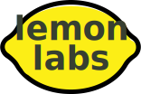

Press ➜ key
Get a new copy of a repo on your machine
Commits a change, but doesn't send it to the server!
Note: New untracked files need to be added with git add (just the same
as svn add). Github Desktop handles this for us.
Check the commit history
Push your local commits to the server
Pull does a fetch and a merge
Creates a branch in your local repo
Request a review of your changes, before they're merged to master